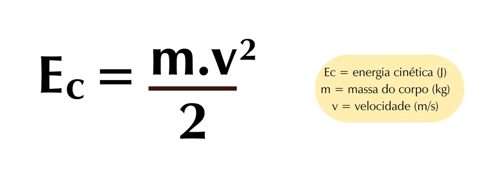

Aula 1: Introdução à Física
Conheça os conceitos fundamentais da física e sua importância no entendimento do universo.
História da Física
A física é uma das ciências mais antigas, com raízes que remontam à Grécia Antiga e aos filósofos como Aristóteles e Platão.

Aula 2: Mecânica
Cinemática
A cinemática estuda os movimentos dos corpos sem considerar suas causas. Inclui conceitos como velocidade, aceleração e trajetória.
Exemplo
Movimento Retilíneo Uniforme (MRU):
Fórmula: \( v = \frac{d}{t} \)
Onde \( v \) é a velocidade, \( d \) é a distância percorrida e \( t \) é o tempo.
Aula 3: Dinâmica
Leis de Newton
As leis de Newton descrevem a relação entre o movimento de um objeto e as forças que atuam sobre ele.
Exemplo
Primeira Lei (Inércia): Um corpo em repouso permanece em repouso e um corpo em movimento continua em movimento a menos que uma força externa atue sobre ele.
Segunda Lei (F=ma): A força resultante sobre um corpo é igual à massa do corpo vezes a sua aceleração.
Terceira Lei: Para cada ação, há uma reação igual e oposta.
Aula 4: Energia
Conservação de Energia
A energia não pode ser criada nem destruída, apenas transformada de uma forma para outra.
Exemplo
Energia Cinética e Potencial:
Energia Cinética

Energia Potencial Gravitacional (Ep) = m.g.h

Onde \( m \) é a massa, \( v \) é a velocidade, \( g \) é a aceleração devido à gravidade e \( h \) é a altura.
Aula 5: Termodinâmica
Leis da Termodinâmica
As leis da termodinâmica descrevem o comportamento da energia térmica e suas transformações.
Exemplo
Primeira Lei: A variação da energia interna de um sistema é igual ao calor adicionado ao sistema menos o trabalho realizado pelo sistema.
Segunda Lei: A entropia de um sistema isolado nunca diminui; processos naturais tendem a aumentar a desordem.
Terceira Lei da Termodinâmica A Terceira Lei da Termodinâmica define que, em uma escala absoluta de temperatura, cujo mínimo é o zero absoluto, no mínimo desta escala, a entropia de todas as substâncias é a mesma.
Lei Zero da Termodinâmica A Lei Zero da Termodinâmica foi introduzida posteriormente às primeiras leis. Isto ocorreu devido ela ser concluída depois das primeiras leis, mas por ser fundamental para estas, foi chamada de Lei Zero, a fim de vir antes das demais. Esta Lei define que, havendo dois sistemas que estão em equilíbrio térmico com um terceiro sistema, então estes dois sistemas estarão em equilíbrio térmico entre si. É o que acontece com o termômetro, por exemplo. Para saber se dois objetos tem a mesma temperatura, basta medir ambos com o termômetro. Havendo a mesma marcação, eles estarão em equilíbrio térmico entre si.
Aula 6: Eletromagnetismo
Fundamentos do Eletromagnetismo
O eletromagnetismo é o estudo das forças elétricas e magnéticas e suas interações.
Exemplos
Lei de Coulomb: A força entre duas cargas elétricas é diretamente proporcional ao produto das cargas e inversamente proporcional ao quadrado da distância entre elas.
Lei de Faraday: A variação do fluxo magnético através de um circuito induz uma força eletromotriz (fem) no circuito.
.jpeg)